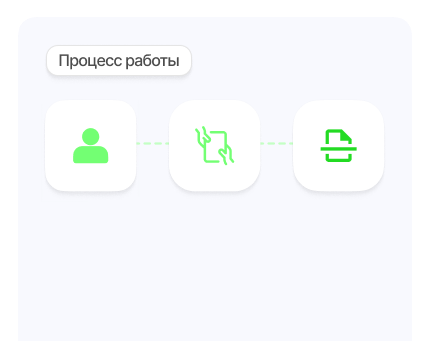
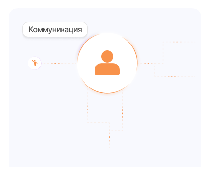
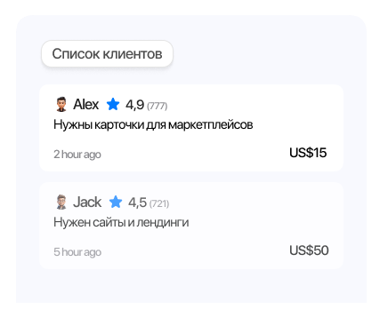
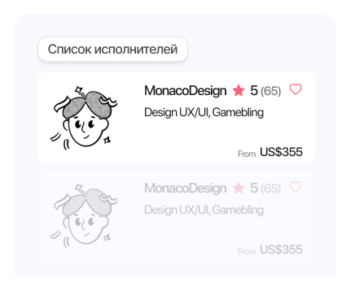

To gotowa, krok po kroku rozpisana metoda zarabiania na delegowaniu
usług. Pokazuję dokładnie to, co sam przeszedłem – jak pozyskiwać
klientów, dobierać wykonawców i zarządzać projektami bez wchodzenia
w codzienną rutynę.Dostajesz konkretny system z narzędziami, które
faktycznie działają i przynoszą dochód.

Główna idea
Zrzucasz z siebie wszystko, co się da i zarabiasz. Otrzymujesz
zlecenie z ustaloną ceną, przekazujesz zadanie sprawdzonej osobie,
sprawdzasz i zostawiasz sobie swoją część. Wszystko jest
przejrzyste. To konkretny system, który możesz zacząć już w
pierwszych tygodniach.

Organizacja
Uczysz się prowadzić cały proces: kontakt z klientem, przekazanie
zadań, kontrola jakości. Zamiast robić wszystko samodzielnie —
zarządzasz zadaniami i pilnujesz, żeby wszystko działało.

Pozyskiwanie klientów
Pokazuję konkretne źródła – platformy, grupy i miejsca, gdzie
faktycznie można zdobywać zlecenia. Tłumaczę, jak selekcjonować
zapytania, prowadzić rozmowę z klientem i doprowadzić do
współpracy bez zbędnych etapów. Gotowe wzory wiadomości, jasny
schemat działania i model rozliczeń.

Dobór wykonawców
Dowiesz się, gdzie szukać solidnych specjalistów, jak ich
weryfikować, delegować zadania i kontrolować wykonanie. Nie chodzi
o samo „oddanie roboty”, tylko o budowanie zespołu, który działa
sprawnie i terminowo.